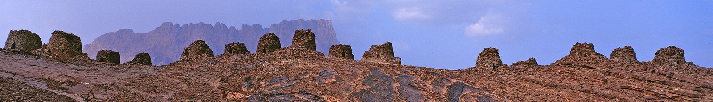

Curiosità dal mondo · Oman
Oman, l’acqua che arriva con la gravità e si divide con il tempo
Gli aflaj raccontano un’ingegneria del paesaggio nella quale canali, coltivazioni e accordi comunitari fanno parte dello stesso sistema.
Approfondimento giornalistico con fonti documentate.
- Oman
- Cultura e patrimonio
- Curiosità dal mondo

Una curiosità dell’Oman non ha bisogno di un edificio imponente per farsi notare. Può avere la forma di un canale, di una piccola deviazione dell’acqua, di un turno rispettato. Gli aflaj mostrano come una risorsa preziosa diventi anche un’organizzazione sociale. È una storia da cercare nei dettagli del paesaggio, anziché soltanto nei suoi panorami più ampi.
Il motore è la pendenza
Gli aflaj sono sistemi di irrigazione nei quali la gravità continua a svolgere un ruolo fondamentale. La scheda UNESCO riconosce cinque componenti del patrimonio: Al Jeela, Muyasser, Daris, Malki e Khatmein. Canali, terreni agricoli, insediamenti e modalità tradizionali di gestione formano un insieme, non una semplice infrastruttura isolata. Il percorso dell’acqua tiene in relazione luoghi e attività. La curiosità non consiste nel considerare questi sistemi privi di tecnica: al contrario, mostra quanta conoscenza serva per sfruttare la conformazione del terreno e distribuire una risorsa senza separarla dal territorio.
Una risorsa, molti diritti d’uso
La documentazione del patrimonio richiama anche l’organizzazione della distribuzione e il valore delle pratiche comunitarie. Nei sistemi descritti dall’UNESCO, l’acqua viene assegnata attraverso quote temporali e dispositivi che ne regolano il passaggio ai campi. Il tempo diventa dunque una misura concreta dell’accesso alla risorsa. È un aspetto meno appariscente di un acquedotto, ma altrettanto importante: un canale può trasportare acqua soltanto se qualcuno mantiene le strutture e rispetta le regole condivise. Il funzionamento materiale e quello sociale rimangono intrecciati.
Fonte: UNESCO World Heritage · Paesaggi e sistemi tradizionali.
Seguire un canale per capire un paese
La storia degli aflaj invita a cambiare domanda. Non soltanto: che cosa vediamo? Anche: che cosa rende possibile la vita intorno a noi? Il paesaggio acquista così una trama di relazioni, lavoro e responsabilità. Nel racconto di un viaggio, un dettaglio simile può contare quanto una veduta spettacolare, perché spiega qualcosa invece di limitarsi a mostrarlo. L’Oman emerge allora anche attraverso le soluzioni costruite per convivere con il territorio: una curiosità discreta, capace di far osservare con attenzione persino il bordo di un piccolo canale.
Ti incuriosisce Oman? Continua a esplorare il giornale di Click&Viaggia oppure condividi con il team la tua idea per una prossima partenza.
Testo originale della redazione basato sulle fonti riportate. Non è un’intervista né un racconto di un viaggio di Daniele. Le fotografie illustrano il paese e mantengono la licenza indicata. L’articolo non costituisce un’offerta di viaggio.